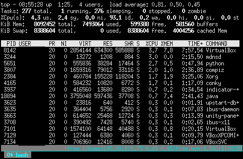

Gnu Screen-Sitzung ein wenig aufgepeppt

Über die Vorzüge des schönen Programms Gnu Screen muß man glaube ich nichts mehr sagen. Ich möchte hier eine Konfiguration vorstellen, die ich im Produktiveinsatz als überaus praktisch empfinde...
Falls jemand darin etwas entdeckt, das er nachnutzen möchte: unten sind die benötigten Dateien angehängt.
Die Konfiguration benutzt und benötigt Conky. Viele werden wissen, daß man Conky als Widget auf den Desktop legen kann. Manche werden in meinen Artikeln gelesen haben, daß man Conky auch benutzen kann, um Text zu generieren. Diese Variante benutze ich, um die Fußzeile in screen-Sitzungen ein wenig anzureichern. Daher muß man zunächst für die Benutzung zwei Pakete installieren. Unter Debian (Ubunut,...) sollte das wie folgt funktionieren:
apt-get install screen conky-cliBeim Installieren darauf achten, daß root-Rechte benötigt werden. Achtung: wer bereits Conky installiert hat, weil er die graphische Ausgabe benötigt, sollte conky-cli nicht drüberinstallieren! conky-cli ist ein abgespecktes conky, das nur die Textausgabe beherrscht; conky dagegen beherrscht beides!
Anschließend sind die drei unten angehängten Dateien ins Home-Verzeichnis des Nutzer zu kopieren. Beim Start der nächsten Screen-Session erscheint ein Bild ähnlich dem folgenden:

Ein xterm mit neu gestarteter gnu screen-Session mit der hier vorgestellten Konfiguration In der untersten Zeile sieht man sozusagen Tabs für die einzelnen Fenster innerhalb der screen-Session. Das kann man mittels CTRL-A-C prüfen: mit jedem neuen Fenster erscheint hier einer mehr. Das Fenster, in dem man gerade arbeitet, wird hervorgehoben.Hier noch einige Tastenkombinationen, die ich gelegentlich hilfreich finde:
- CTRL-a-c
- Neues Fenster
- CTRL-a-d
- Detach
- CTRL-a-S
- Split
- CTRL-a-Tab
- Schaltet zwischen Regionen in einem Fenster um
- CTRL-a-Esc
- Copy-Modus aktiv (Scrollen möglich)
- Esc
- Copy-Modus verlassen
- CTRL-a-A
- Titel für ein screen-Window vergeben
- CTRL-a-X
- Schließt die aktuelle Region (Fenster bleiben erhalten)
- CTRL-a-Q
- Schließt alle bis auf die aktuelle Region (Fenster bleiben erhalten)


Artikel, die hierher verlinken
Anpassung von Gnu Screen
03.10.2019
Ich setze hier die Reihe von Artikeln zum Thema Gnu Screen fort
Conky & InfluxDB
29.06.2019
Nachdem ich hier schon länger nichts mehr über Conky berichtet habe, aber immer noch ein großer Fan bin habe ich nun versucht, Conky mit InfluxDB zu verbinden.
Screencasts von Terminal Sessions erstellen
07.02.2016
Hier ist ein Script zu finden, mit dem man auf einfache Art und Weise eine Terminalsession in einen Screencast bannen kann.


Vor 5 Jahren hier im Blog
-
Shania Twain - Ain't no Particular Way
29.05.2016
Ein überschaubares Publikum, Union Station als Band im Rücken - musste ja gut werden...
Weiterlesen...
Tags
Android Basteln C und C++ Chaos Datenbanken Docker dWb+ ESP Wifi Garten Geo Git(lab|hub) Go GUI Hardware Java Jupyter Komponenten Links Linux Markup Music Numerik PKI-X.509-CA Python QBrowser Rants Raspi Revisited Security Software-Test sQLshell TeleGrafana Verschiedenes Video Videos Virtualisierung Windows Upcoming...
Neueste Artikel
-
 Gnuplot und Statistik
Gnuplot und Statistik
Ich bin neulich bei Mastodon über eine Anfrage gestolpert, wie man online schnell eine graphische Darstellung statistischer Daten mit Mittelwert usw. anfertigen könnte. Ich gab dazu einige Suchparameter ergänzt um den Schlüsselbegriff "Gnuplot" ein und fand sofort einen Artikel, der erklärte, wie man das angefragte Szenario mittels Gnuplot umsetzen könnte.
Weiterlesen... -
BPF
Einige Links zu Informationen rund um den Berkeley Packet Filter im Linux Kernel...
Weiterlesen... -
Erweiterung des Distinguished Name für x509-Zertifikate
Ich habe das Projekt zu Pflege und Management einer PKI aus beliebig vielen CAs erweitert.
Weiterlesen...
Manche nennen es Blog, manche Web-Seite - ich schreibe hier hin und wieder über meine Erlebnisse, Rückschläge und Erleuchtungen bei meinen Hobbies.
Wer daran teilhaben und eventuell sogar davon profitieren möchte, muß damit leben, daß ich hin und wieder kleine Ausflüge in Bereiche mache, die nichts mit IT, Administration oder Softwareentwicklung zu tun haben.
Ich wünsche allen Lesern viel Spaß und hin und wieder einen kleinen AHA!-Effekt...
PS: Meine öffentlichen GitHub-Repositories findet man hier.